Ausdrucken - ist bei uns bis A0 - 841 x 1189 mm möglich
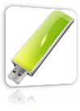
Mit unserem neuen Großformatdrucker bieten wir Ihnen in Pasing als Copyshop das gesamte Leistungsspektrum.
Ob es ein Posterdruck in Matt oder Glanz sein soll, oder ob wir den Architektenplan Ihres Hauses mit unserem Plotter ausdrucken - beides ist jederzeit durchführbar. In diesen Fällen sind wir auch Samstags für Sie da.
Am einfachsten gelingt der Ausdruck vom USB-Stick, der CD, der Smart-Card, Micro-SCard oder anderen Medien, wenn die Datei als PDF von Ihnen abgespeichert wurde. Auch JPEG od. Tiff-Dateien lassen sich ausdrucken.
Entweder Sie haben ihr Dokument als PDF abgespeichern können, oder Sie laden sich einen "PDF Creator", z.B. bei "Chip.de" herunter. Der PDF-Creator taucht dann als Drucker in Ihrem Druckermenü auf. Sie wählen den PDF-Creator einfach als Drucker aus. Dann gehen Sie auf "Drucken", geben den Speicherort und einen Namen für die Datei an und schon verfügen Sie über das "PDF".
Bei jedem anderen Dokumenten-Typ ist ein absolut gleichartiges Öffnungsprogramm auf unserem PC notwendig. Ist dieses nicht auf dem "Öffnungscomputer" vorhanden, dann ist der Ausdruck nicht sofort möglich. Gleichsam "sucht" der Computer, mit welchem das Dokument geöffnet wird, bei sich selbst nach dem Schrifttyp des Kundendokuments. Hier ist es dann so, dass nicht jeder Computer, auf welchem die Öffnung erfolgt, auch über die identische Schriftdatei verfügt.
Kopieren

Wir kopieren Vorlagen von A7 bis A0, d.h. von der Visitenkarte bis zum Architektenplan. Das funktioniert in schwarz/weiß oder in Farbe.
Unsere Kundenkopierer arbeiten vollautomatisch. Man legt einen Stapel Blätter ein, und der Kopierer zieht diesen ohne irgendeine Hilfe selbständig in das Gerät ein. So können Sie den Stapel mehrfach kopieren – beidseitig, also gleichsam auch die Rückseiten. Das Sortieren übernimmt das Gerät.
Unsere Geräte arbeiten mit höchster Auflösung (1200 x 2400 dpi/ppi im Ausdruckverfahren) wodurch absolut kontraststarke Kopien entstehen, die vom Original kaum zu unterscheiden sind. Die Farbechtheit und die Bildschärfe werden durch ein besonderes Reflexionspapier unterstützt. Je nach Anforderung kann zum Archivieren auch einfaches Papier verwendet werden.
Sie haben keine Zeit, selbst zu kopieren? Der Umfang der Kopie-Erstellung ist sehr hoch? Kein Problem - wir machen das für Sie. Wir benachrichtigen Sie per SMS von der Fertigstellung Ihres kompletten Auftrags.
Sie suchen Lösungen zum komfortablen Ablesen von Kopierer Zählerständen?
Besuchen Sie die Website von copycounter.de
Broschüren
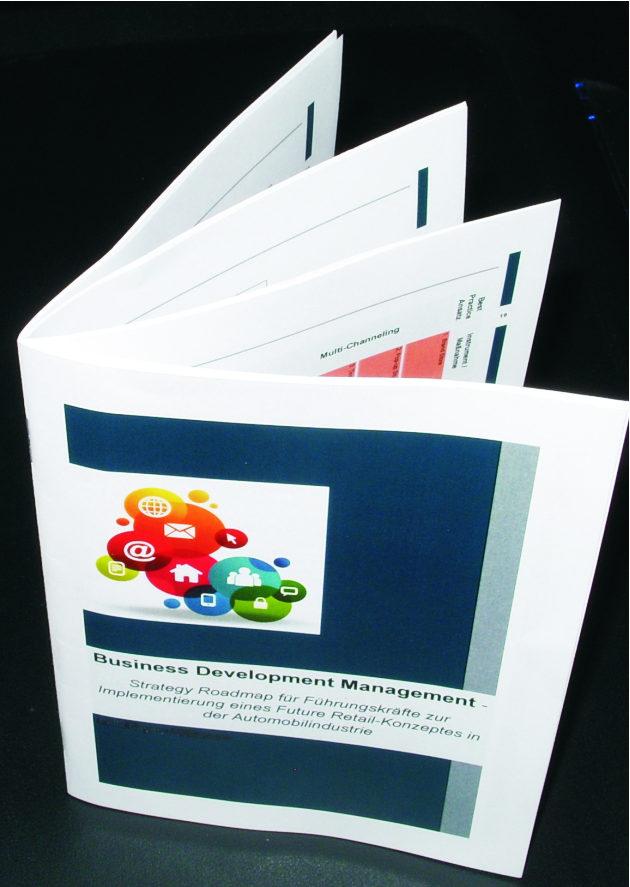
Eine Broschüre mit bis zu 60 sichtbaren Seiten lässt sich bereits ab einem Stück auf unserem Broschürendrucker produzieren. Hierzu gehören Liederhefte, Kirchenhefte, Hochzeitshefte, Handouts usw.
Wir benötigen hierzu einfach nur Ihre PDF-Datei im A4-Format aus welcher wir dann wahlweise eine A4- und auch eine A5-Broschüre produzieren können. Dies geht in Farbe und auch in Schwarz/Weiß. Auch das erste Umschlagblatt kann etwas stärker, oder auch in einem besonderen Farbton gewählt werden. Bei der Datei sind ab der ersten bis zu letzten Seite alle Seiten in Folge nacheinander sichtbar. Unser Drucker sorgt für die richtige Verteilung der Seiten innerhalb der Broschüre.
Planfaltmaschine ROWE VARIOFOLD
Unsere Planfaltmaschine faltet Ihren Plan so, daß Sie ihn in einem Ordner abheften können. Das Falten ist in ca. 15 Sec. erledigt.
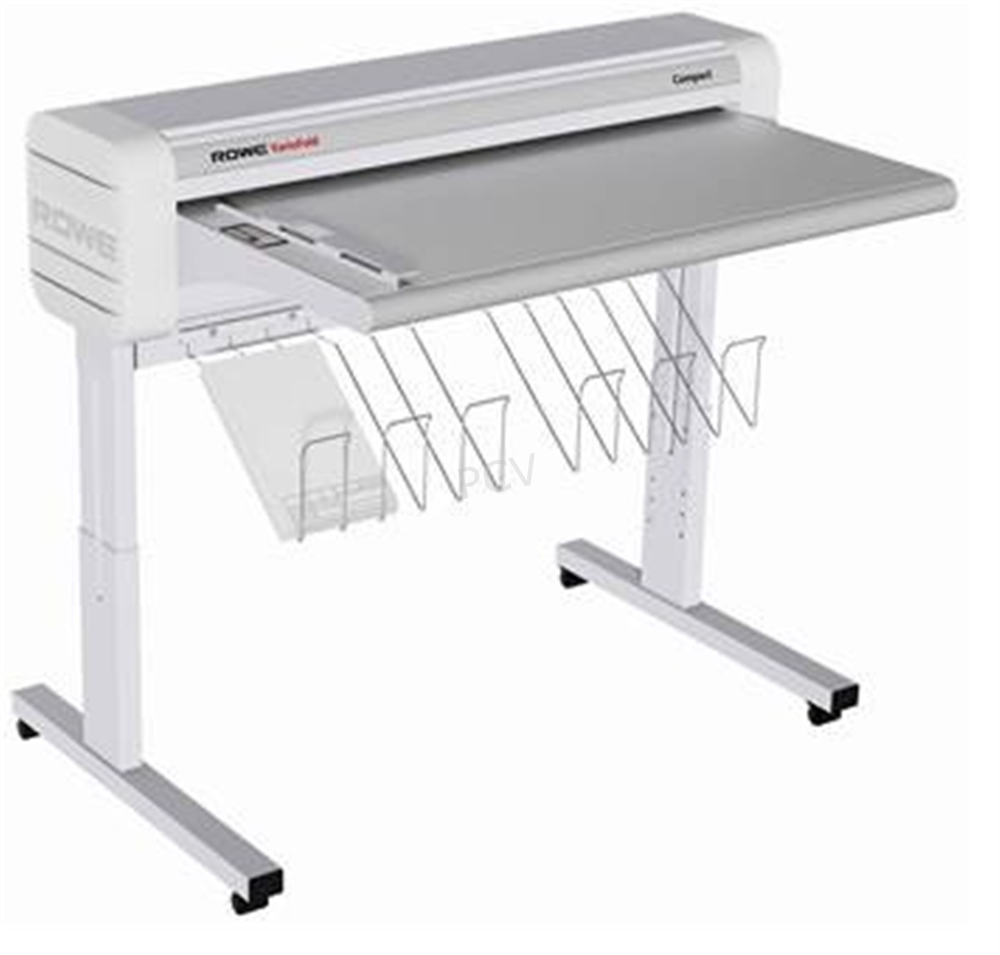
DocuColor 252
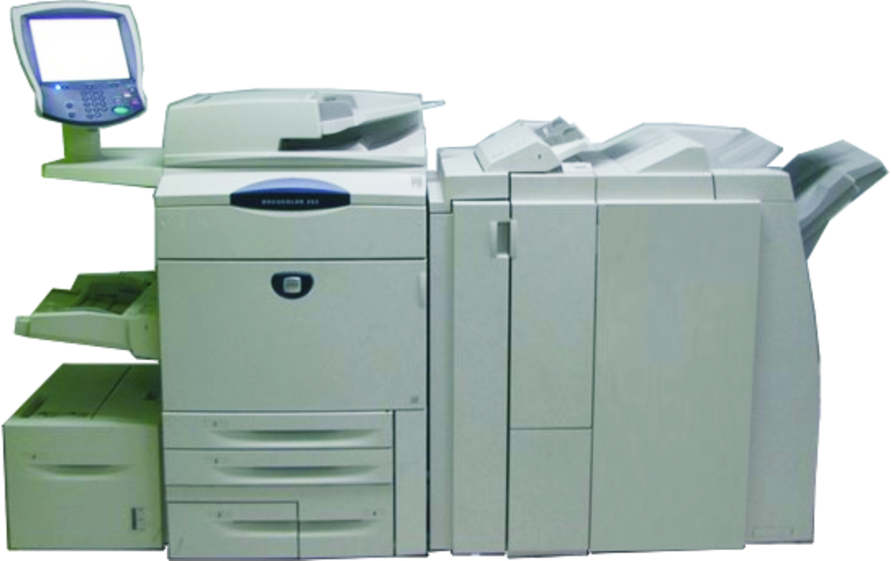
Diese Maschine bedruckt Papiere mit Maßen bis zu 330mm x 460mm. Das bedeutet, dass bei einem späteren Zuschnitt auf A3 (297 x 420mm) randlose Produkt erstellt werden können. Bis 350Gr./qm starker Karton kann der Einzug aufnehmen. Erzeugt werden dann fotoidentische Drucke mit einer Auflösung von 2.400 x 2400 DPI.
(Bereits 300 DPI werden als kontraststark empfunden)
OFFICE 1020
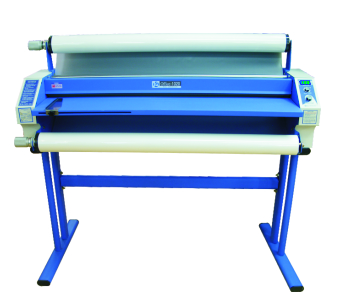
Dieser Laminator arbeitet mit Heißrollen und ist in der Lage jeden Ausdruck z.B. A0 (118,8 cm x 84,1 cm) oder auch 5 Meter x 0,95 Meter zu laminieren. Dabei beschichtet die Laminierfolie das Papier absolut wasserdicht und verleiht der Oberfläche einen besonderen Glanz. Auch nichtglänzendes Laminieren ist jederzeit möglich.
Scanservice - ist bis 1040 x 1189 mm möglich
 Vom Großformat - z.B. einer Landkarte oder einem Architektenplan, od. auch einer Tageszeitung, bis zum kleinsten Schnipsel Papier scannen wir Ihre Vorlagen ein, und speichern sie auf USB-Sticks, CD´s, DVD´s, Disketten oder senden die eingescannten Grafiken oder Unterlagen an eine Email-Adresse Ihrer Wahl.
Vom Großformat - z.B. einer Landkarte oder einem Architektenplan, od. auch einer Tageszeitung, bis zum kleinsten Schnipsel Papier scannen wir Ihre Vorlagen ein, und speichern sie auf USB-Sticks, CD´s, DVD´s, Disketten oder senden die eingescannten Grafiken oder Unterlagen an eine Email-Adresse Ihrer Wahl.
Schneideservice
 Wir verfügen über eine vollelektronische Schneidemaschine, mit welcher wir Bögen mit maximal 70 x 50 cm auf Wunschmaß zuschneiden können.
Wir verfügen über eine vollelektronische Schneidemaschine, mit welcher wir Bögen mit maximal 70 x 50 cm auf Wunschmaß zuschneiden können.
Größere Bögen schneiden wir mit einer Wartezeit von einem Tag.
Bindearbeiten
 Die üblichen Bindungen: Klebebindung und Ringbindung erledigen wir während des Tages. Meist kann man sie nach kurzer Wartezeit gleich wieder fertig mitnehmen. Bei den Ringbindungen stehen verschiedene Binderücken zur Verfügung: Kunststoff in schwarz und weiß, sowie Metallbinderücken. Bei den Klebebindungen gibt es gleichfalls schwarze und weiße Cover. Gebunden werden können bis zu 250 Blatt bei Ringbindungen. Bei der, wie im Bild dargestellten Bindung sind bis zu 340 Blatt (bei 80 Gr./qm) möglich.
Die üblichen Bindungen: Klebebindung und Ringbindung erledigen wir während des Tages. Meist kann man sie nach kurzer Wartezeit gleich wieder fertig mitnehmen. Bei den Ringbindungen stehen verschiedene Binderücken zur Verfügung: Kunststoff in schwarz und weiß, sowie Metallbinderücken. Bei den Klebebindungen gibt es gleichfalls schwarze und weiße Cover. Gebunden werden können bis zu 250 Blatt bei Ringbindungen. Bei der, wie im Bild dargestellten Bindung sind bis zu 340 Blatt (bei 80 Gr./qm) möglich.
Handgebundene Bücher
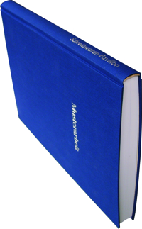Ein Buch soll es sein? Dies ist gleichfalls möglich. Unser Handbuchbindemeister fertigt Ihr Buch in A4, A5 oder Ihrem Wunschmaß entsprechend an. Das dauert je nach Umfang zwischen vier und sechs Tagen. Der Einband, also das Hardcover wird meist mit Leinen bezogen. Verschiedene Farben wie Anthrazitgrau, Marineblau, Bordeaux-Rot usw. sind genauso möglich wie ein selbstentworfenes Frontdesign. Viele Doktorarbeiten oder bleibende Erinnerungen bekommen so einen angemessenen Rahmen. Auf dem Buchrücken oder Frontdeckel kann zusätzlich der gewählte Titel eingeprägt werden.
Faxservice
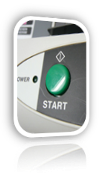 Wir senden Ihr Fax an Ihre Adresse hier und auch an jedes Faxgerät im Ausland. Ob in die Ukraine oder nach Mexiko – unsere Faxe kommen an. Auf dem automatisch ausgedruckten Faxbericht können Sie Ihren Empfänger, die Zeit und die Anzahl der Seiten jederzeit nachweisen.
Die Grundgebühr beträgt 2,50 Euro. Pro Seite kommen dann innerhalb Deutschlands noch 0,25 Euro hinzu. Vorlagen die größer als A4 sind passen wir durch Kopierverkleinerung an. Bei uns geht jedes Fax an jede Fax-Nummer (außer an die Nummern der Servicedienste 0700.... oder 0900....)
EINLADUNGSKARTEN
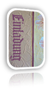 Wir fertigen Einladungskarten für alle möglichen Events an. Wir lesen Ihre Texte nicht nur, wir lassen auch unbekannte Wörter und Schreibweisen korrigieren. Bei den allgemeinen Anlässen gibt es ca. 60 unterschiedlich geschnittene Karten. Gleichfalls gibt es auch die Möglichkeit, den Druck auf die, von Ihnen mitgebrachten Karte aufzubringen. Überdies gibt es auch Karten aus unserer Kartenwand in 26 Farben und 16 verschiedenen Größen.Alle Karten, die sich mit Lasertechnik bedrucken lassen, können anschließend auch mit einer Folie überzogen werden, sodass sich die Schrift in Gold, Kupfer oder Silber und auch anderen Metallic-Tönen darstellen lässt.
Wir übernehmen dabei auch komplette Anfahrtsskizzen sowie Symbole wie Familienwappen oder Cliparts unserer Kunden.
EINLADUNGSKARTEN-HOCHZEIT
 Einladungen zur Hochzeit beginnen bei der Einladungskarte und setzen sich fort mit, Kuvert, Menükarte und Tischkarte.
Einladungen zur Hochzeit beginnen bei der Einladungskarte und setzen sich fort mit, Kuvert, Menükarte und Tischkarte.Bei den Hochzeitskarten verfügen wir über ca. 80 verschiedenen Kartenformen. Bei den übrigen Anlässen gibt es ca. 60 unterschiedlich geschnittene Karten.
Alle Karten, die sich mit Lasertechnik bedrucken lassen, können anschließend auch mit einer Folie überzogen werden, sodass sich die Schrift in Gold, Kupfer oder Silber und auch anderen Metallic-Tönen darstellen lässt.
Wir übernehmen dabei auch komplette Anfahrtsskizzen sowie Symbole wie Familienwappen oder Cliparts unserer Kunden.
HARDCOVER BINDUNGEN
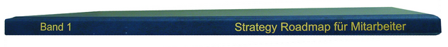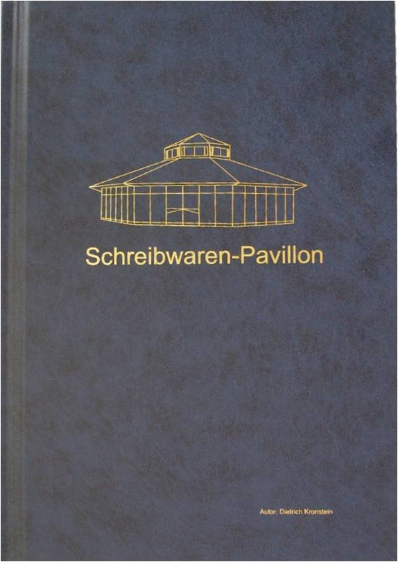Unsere Hardcoverbindung ist für gehobene Ansprüche die richtige Wahl. Ob Bachelorarbeit, Masterarbeit oder Doktorarbeit, Sie erhalten mit dieser Bindeart eine repräsentative Darstellung des Inhalts. Bis 300 Seiten lassen sich auf diese Weise absolut sicher und dauerhaft benutzbar binden. Mit einem Foliendruck lässt sich das Hardcover außen - also auf dem Buchdeckel, dem Binderücken und auch dem Buchrücken - mit Ihrem Titel, bzw. Thema beschriften. Auch LOGOS sind jederzeit in diesem Rahmen darstellbar. Hierzu benötigen wir nur Ihr LOGO in schwarz/weiß als Datei.
Folgende Daten benötigen wir, um für den gleichen Tag ein Preisangebot machen zu können:
-
Wieviel S/W-Seiten und wieviel Color-Seiten wollen Sie drucken lassen?
- Am besten erstellen Sie dafür ein PDF.
- Achten Sie beim Erstellen darauf, S/W-Seiten auch so (also in S/W) abzuspeichern.
- Wieviel Ausfertigungen sollen es werden?
- Oder ist Ihr Druck bereits erstellt?
- Benötigen Sie einen Foliendruck auf dem Hardcover?
- Auf der Front
- Auf der Rückseite
- Auf dem Binderücken (Ist zu sehen, wenn das Buch im Regal steht).
Zur Fertigstellung bei uns:
Rufen Sie uns an. Die meisten Arbeiten sind innerhalb weniger Stunden abholbereit.
089 / 881491 oder auch per E-Mail
VIDEO ZU HARDCOVERBINDUNGEN
Hier sehen Sie in einem Video wie wir auf einer Hardcover-Bindung die Beschriftung erstellen.
Stempelanfertigung
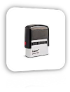Wir produzieren für Sie jeden Stempel. Es gibt Rundstempel und eckige Stempel. Beide Arten gibt es als Holzstempel sowie als Selbstfärber (also Stempel mit eingebautem Stempelkissen). Auch hier können Sie Ihr Firmenlogo auf Papier oder als Datei mitbringen. Sie haben gleichfalls die Möglichkeit Ihren Stempel mit bunter Schrift oder 15 verschieden farbigen Inhalten darzustellen.Sollten Sie es wirklich mal eilig haben, können Sie Ihren Stempel auch sofort selbst setzen. Es gibt hierzu ein Set in verschiedenen Größen, mit welchem Sie die Buchstaben gleich einsetzen, und sofort selbst stempeln können. Dieser Typ ist als Stempel für Stempelkissen, als auch als Selbstfärber erhältlich.
T-Shirtdruck
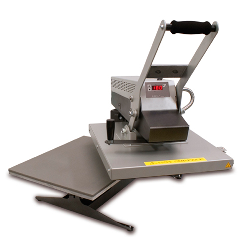Wir bedrucken fuer Sie Ihr weißes T-Shirt mit dem von Ihnen gewünschten Motiv. Dazu benötigen wir Ihre Angaben, wie z.B. Text, Foto, Zeichnung oder auch eine fertige Datei (PDF, JPEG, TIFF, PNG, SVG oder eine WORD-Datei) Farbige T-Shirts sind nur bedingt geeignet, da die Druckfarbe durch einen farbigen Stoffuntergrund verfälscht wird. Im Allgemeinen ist der Druck nach ca. einer halben Stunde erledigt.Etikettendruck
Es gibt sehr viele verschiedene Etiketten: aus Metallfolie, aus weißer Kunststofffolie, aus Transparentfolie und aus einfachem Papier. Wir bedrucken diese in verschiedenen Verfahren in Farbe oder schwarz/weiß. Ob für eine Regalauszeichnung oder für die Rückseite Ihres Privatkuverts. Auch hier werden Zeichen oder Firmenlogos von uns übernommen.
Visitenkarten
Visitenkarten gibt es bei uns in alle möglichen Ausführungen:
Mit glänzender Oberfläche, in mattem Karton, in weißem, farbigem Karton und mit Farbschriften und auch Folienschriften. Auch hier lassen sich alle Zeichen und Firmenlogos von uns übernehmen. Gleichfalls bedrucken wir Visitenkarten aus Büttenkarton.ÖFFNUNGSZEITEN & KONTAKT
Wir sind für Sie da:
Montag - Freitag: 09:30 Uhr - 13:30 Uhr und 15:00 - 18:30 Uhr
Samstag, 24.12. (Heiligabend) 09:30 bis 16:00 Uhr
Bachbauernstr. 2d
81241 München
Telefon: +49 (0)89 88 14 91
Fax-Nr.: +49 (0)89 834 95 19
FACHKRÄFTE
Wir glauben daran, dass nur der, der sein Fach gelernt hat, einem anderen darüber Auskunft geben kann. Deswegen sind uns Fachkräfte wichtig.
UNSERE PHILOSOPHIE
Wir wollen nicht lange philosophieren –
wir wollen das Gleiche wie Sie, also das
gute Ergebnis